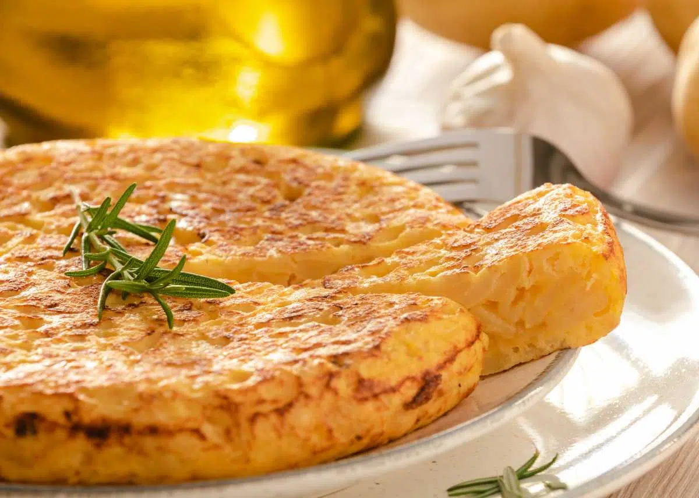

Arroz al horno
El popular y tradicional arroz al horno valenciano.
Ver la receta
El popular y tradicional arroz al horno valenciano.
Ver la receta
Las natillas caseras de la abuela de toda la vida.
Ver la receta
La típica tortilla española
Ver la receta